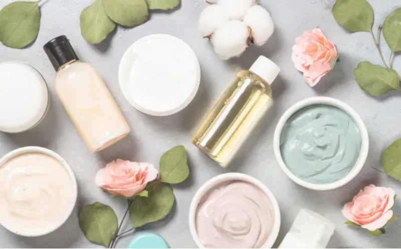

Epidermis
Es la capa más externa y funciona principalmente como una barrera protectora.
Para comprender el acné hay que conocer primero la piel, sus capas y el papel del sebo producido por las glándulas sebáceas.

La piel cumple funciones esenciales para mantener nuestro organismo protegido y en equilibrio. Actúa como barrera frente a traumatismos, sustancias químicas, microorganismos y radiación ultravioleta. También ayuda a regular la temperatura, permite percibir estímulos y participa en la síntesis de vitamina D.
Es la capa más externa y funciona principalmente como una barrera protectora.
Se encuentra debajo de la epidermis y brinda soporte, nutrición y sensibilidad a la piel.
Es la capa más profunda y ayuda a aislar, proteger y almacenar energía.




El sebo es producido por las glándulas sebáceas y ayuda a mantener la piel hidratada, disminuir la fricción y ofrecer protección frente a microorganismos.


Durante la pubertad, los andrógenos aumentan la producción de sebo. Cuando esta producción es excesiva, puede favorecer la aparición del acné.